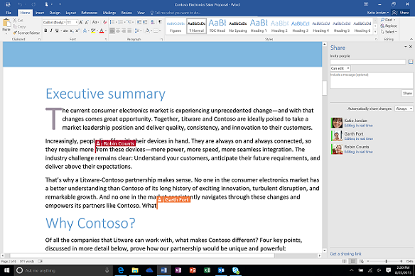

Microsoft Office Online
Home
Lab 4B
Microsoft Office Online
Design process and evaluation
Score: 3 out of 3
How to identify who is in control of an object (which may or may not be visible)?
Score: 2 out of 2
Passing control to another user and requesting control
Score: 1 out of 2
Screen based controls for Multiuser App's Shared object
Score: 4 out of 5
Guidelines for colors
Score: 0 out of 1
Strategies for control change
Score: 1 out of 2
Guidelines for effective content sharing
Score: 2 out of 2
Screenshots
Blocked the shared object while showing the user in control of an object
